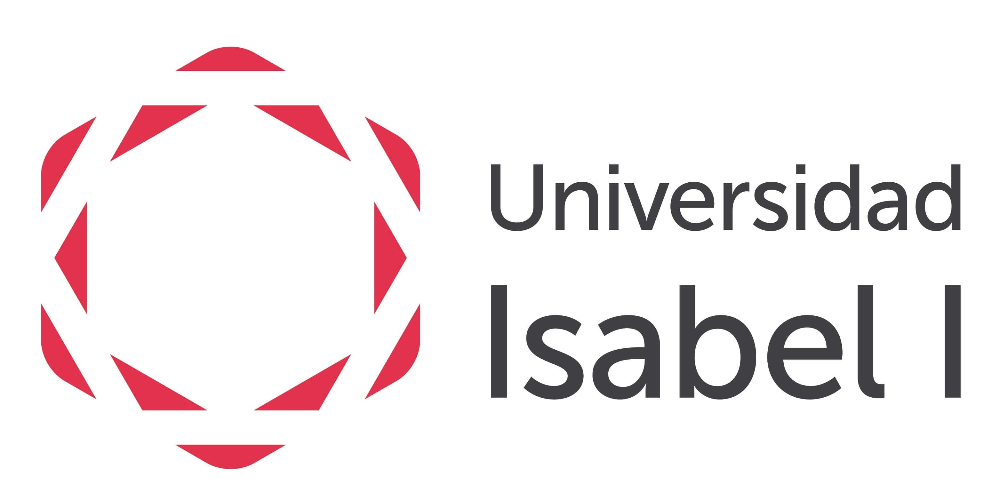
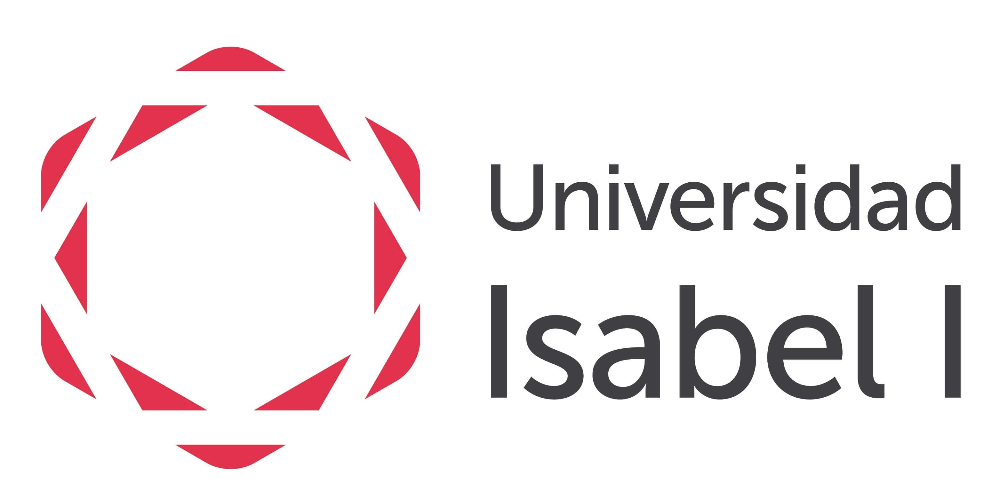
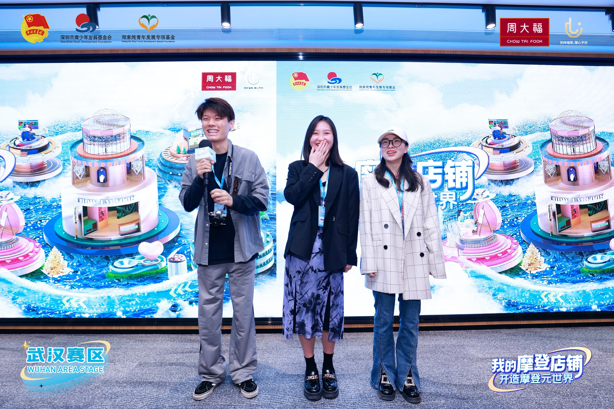
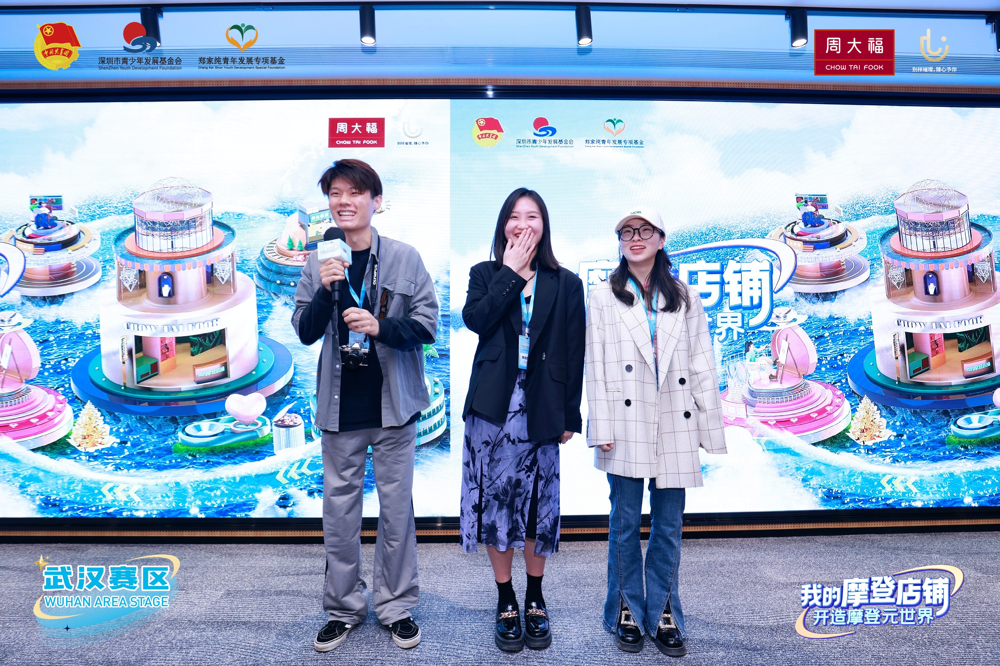
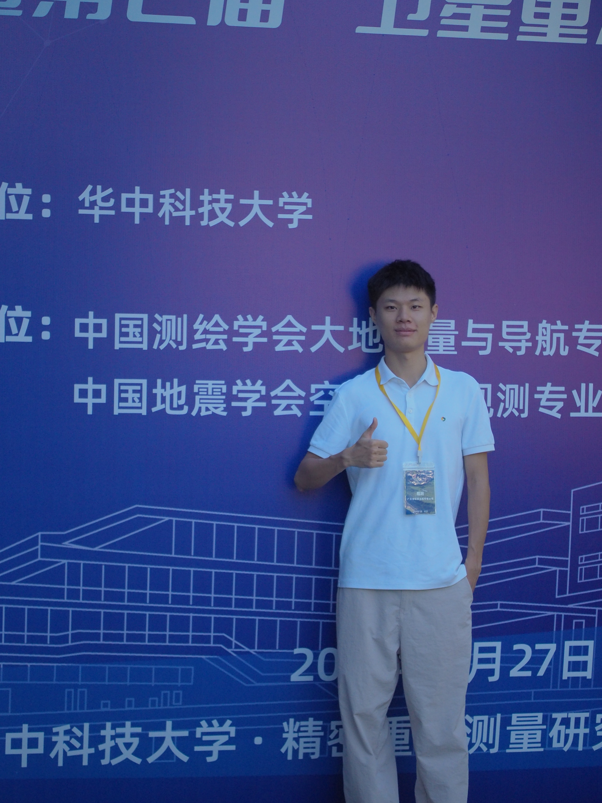
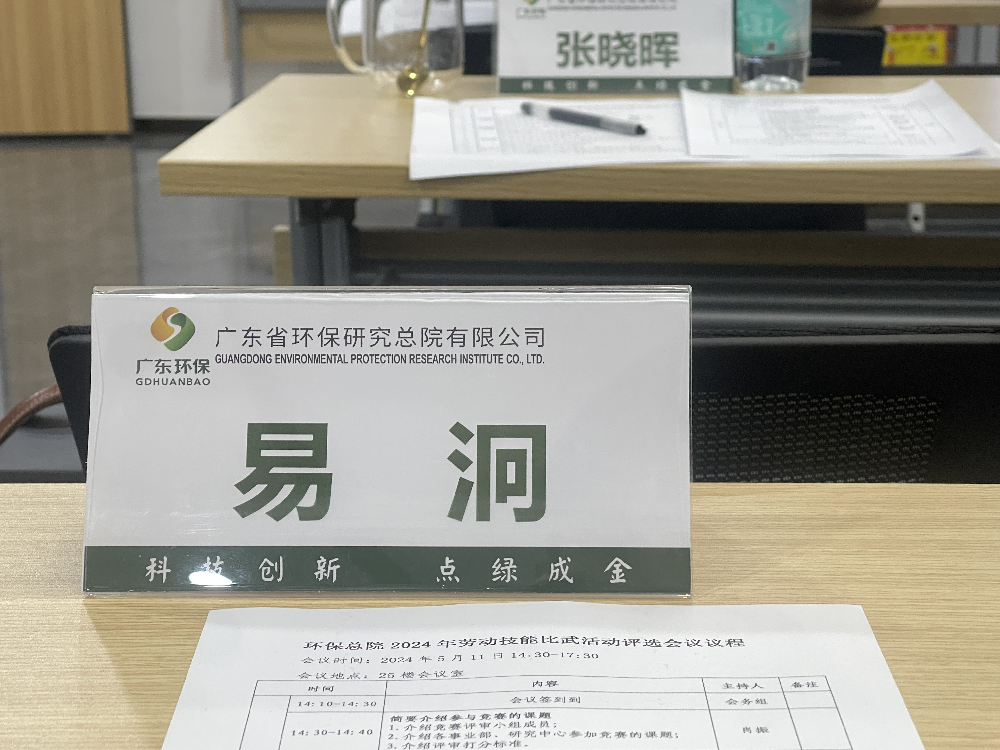
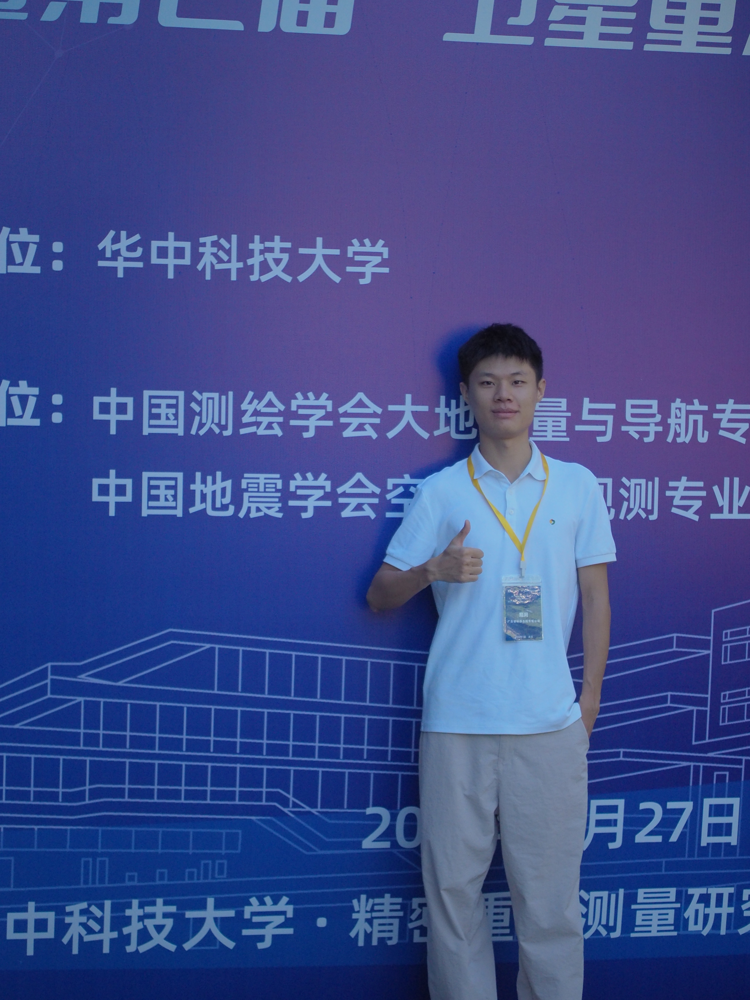
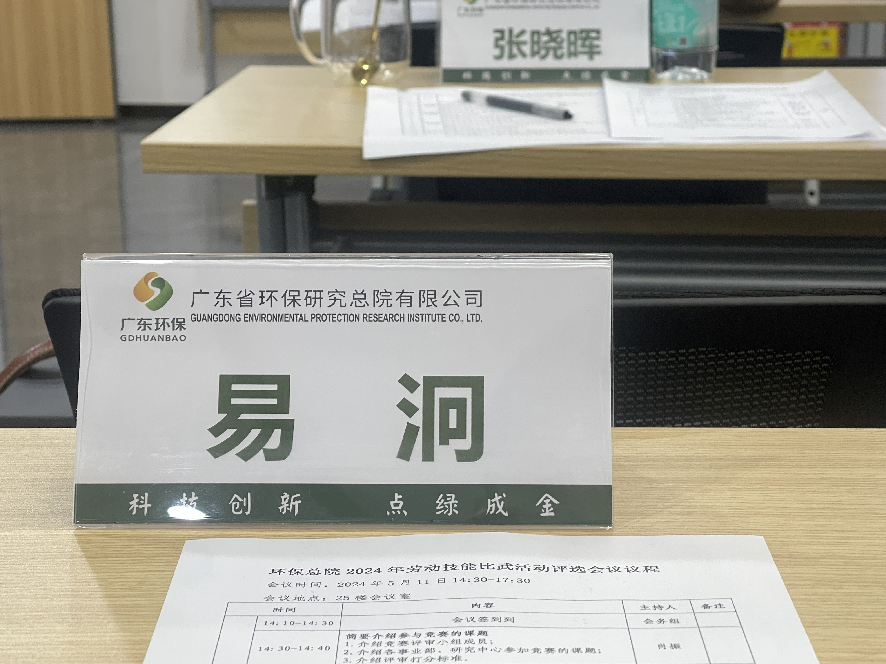

Education
 

Education Details
KIT- Karlsruhe Institute of Technology | Master of Geophysics | Apr 2025 - Now
Coursework spans seismic processing/modeling, inversion & tomography, and seismic wave theory; emphasises quantitative analysis and computational methods.
Universidad Internacional Isabel I de Castilla | Master of Digital Marketing & E-Commerce and MBA(diploma) | Jan 2024 - Oct 2024
Covered go-to-market, analytics, and strategy—complementing
technical background with commercial and managerial skills.
Core courses:
Neuro-linguistic programming, Financial management, Community management, Web
positioning.
Average Score: 78.1 - Digital Marketing | 82.5 - MBA
China University of Geosciences | Bachelor of Geophysics | Sep 2019 - Jun 2023
Built fundamentals in seismology, geophysical data analysis, geomagnetism, gravity, and
computational modelling; both well-equipped in research and applications.
Average Score: 84.1


 



 


